1. Introduction
1.1 Transformer 结构
对于 Transformer 在三维点云分析中，传统 Transformer 的结构如下：

图 1 传统 Transformer 结构图
由于点云分割等稠密预测任务的需要，涉及点云处理的 Transformer 网络结构的 Decoder 部分往往会重新设计。学者通常采用 PointNet++ 或包含了 Transformer 块的卷积神经网络作为处理点云数据的方法。
1.2 Encoder 端处理范式
通常的处理范式。对于一个输入点云 \(P=\{p_1,\ p_2,\ p_3,\ \ldots,p_N\}\in R^{N\times D}\)，其中 \(D\) 是输入点云的特征维度。则在 Encoder 模块中将有以下操作：
-
构造词向量。点云 \(P\) 将被投影到高维特征空间，生成词特征矩阵 \(X \in R^{N\times C}\)。此操作可以通过多层感知机 MLP 或特征提取骨干网络（如PointNet）来实现。
-
位置编码。用于捕捉几何信息或输入点的相对顺序，生成位置特征矩阵 \(B \in R^{N\times C}\)。此操作可以通过固定编码（如Transformer）或可学习编码（如Point-Transformer）来实现。
-
注意力机制。以采用与 Transformer 中相同的 \(sin/cos\) 位置编码方式为例，将其位置特征矩阵 \(B\) 加到词特征矩阵 \(X\) 中：\(X=X+B \in R^{N\times C}\)，并使用三个可学习权重矩阵 \(W_Q \in R^{C\times C_Q}, W_K \in R^{C\times C_K}, W_V \in R^{C\times C}\) 将该特征矩阵 \(X\) 投影到三个不同的特征空间，注意通常 \(C_Q=C_K\)。此时 \(Query,Key,Value\) 矩阵可以表达成如下形式：
\(\begin{align} \left\{\begin{matrix} Query=XW_Q \in R^{N\times C_Q} \\Key=XW_K \in R^{N\times C_K} \\Value=XW_V \in R^{N\times C} \end{matrix}\right. \end{align}\)
在给定 \(Query,Key,Value\) 矩阵后，自注意力矩阵 \(F \in R^{N\times C}\) 可以表示为：
\( \begin{align} F=\operatorname{Attention}(Q, K, V)=\operatorname{Softmax}\left(\frac{Q K^{T}}{\sqrt{C_{K}}}\right) V \end{align}\)
\(F\) 矩阵中每一个特征向量是通过计算所有输入特征的加权和获得的，因此，它能够与所有输入特征建立连接。
-
归一化层。通过在前馈层之前和之后放置归一化层，对特征图进行标准化和归一化。归一化方法可以大体上分为 BatchNorm 和LayerNorm，前者常用于 NLP，后者常用于 CV 领域。
-
前馈层。该层用来增强注意力特征的表示，通常由两层 MLP 和相应的激活函数构成。
-
残差连接。通过将某一模块的输入与输出相加，可以保证数据经过该模块后的效果不会变的比之前差，并且可以解决梯度消失问题。
需要注意的是，并非所有处理 3D 点云的网络都由以上 6 个组件构成。有一些早期的 3D Transformer 网络中并没有位置编码模块，它们更关注于自注意力机制在点云上的应用（如 Point Attention 或者 Attentional ShapeContextNet）；还有一些 Transformer 网络将位置编码直接合并到词向量模块中（如Point Cloud Transformer 采用基于 EdgeConv 的方法实现）。
1.3 Transformer 在点云中的应用
主要分为三大种类：
- 基于 ** 实现方式 ** 的分类方法；
- 基于 ** 数据表示 ** 的分类方法；
- 基于 ** 任务特征 ** 的实现方法。

图 2 Transformer 分类
2. Transformer Implementation
细分 Point Transformer 的实现形式，可以将其主要分为两部分，分别是 ** 操作规模 ** 和 ** 操作空间 。操作规模代表了算法作用点云的范围，主要分为 ** 全局 Transformer 和 ** 局部 Transformer**；操作空间代表了算法运行的维度，主要分为基于 Point-wise 的 Transformer 和基于 Channels-wise 的 Transformer。
2.1 Operating Scale
在以操作规模分类的 Transformer 网络中，全局 Transformer 是将 Transformer 块应用于所有输入点云，以便进行全局点云特征提取；而局部 Transformer 是将 Transformer 块应用于局部 patch，用来进行局部特征提取。
2.1.1 Global Transformer
对于全局 Transformer，其注意力输出 \(F\) 的每个特征都可以和任一个输入特征 \(X\) 相连接，并且他与输入的排列具有相同的变化特性，能够学习全局点云的上下文特征。
PointNet是首个采用全局 Transformer 结构的 ** 单一尺度 ** 方法，此后 Point Cloud Transformer 首先提出了一种 ** 邻域嵌入 ** 架构，它将点云的三维坐标作为输入 \(P\)，通过该框架将 \(P\) 映射到高维特征空间，同时还可以将局部信息整合到嵌入特征中，接着这些特征被输入到 4 个堆叠的全局 Encoder 块中用来学习语义信息，最终通过全局最大池和平均池提取全局特征用来进行分类和分割。

图 3 PointNet Pipeline
除此之外，Point Cloud Transformer还将注意力模块进行改进，其受到 Graph convolution networks 中拉普拉斯矩阵的启发，构建了名为 Offset 的注意力模块，该注意力模块可以增到注意力权重并减少噪声的影响。

图 4 Point CLoud Transformer Pipeline
3CROSSNet是一种 ** 全局跨级跨尺度交叉注意力 ** 的 Transformer 网络结构。该方法首先对原始输入点云进行FPS（最远点采样），获得三个不同分辨率的点子集。其次利用堆叠的多个共享 MLP 模块提取每个采样点的局部特征。接着将 Encoder 块用于每个点子集得到其全局特征提取。最后，该方法提出了跨级交叉注意力模块 CLCA 和交叉尺度交叉注意力模块 CSCA，用于在不同分辨率点子集和不同级别特征之间建立连接，以进行长距离层间和层内依赖关系的建模。

图 5 3CORSSNet Pipeline
Point-BERT将 BERT 用于 3D 点云处理，提出了一种针对全局 3D Transformer 的 **BERT 预训练 ** 策略，用局部 patch 作为输入，首先利用 mini-PointNet，遵循ViT 对输入点云进行 Input Embedding，其次使用带有 dVAE（离散变分自动编码器）的点云Tokenizer，将 Embedding 后的点云转换成离散的 point token 用于预训练。其中 Tokenizer 网络由DGCNN 改编，用于产生有意义的局部信息聚合，并通过基于 dVAE 的点云重建来进行学习。在预训练期间，一些带有 MASK 的 token 被输入进 Encoder 网络，在 Tokenizer 生成的 point token 监督下，可以训练 Encoder 恢复被 MASK 位置的相应 token。

图 6 Point-BERT Pipeline
2.1.2 Local Transformer
与全局 Transformer 相比，局部 Transformer 更关注局部 patch 而非全局点云上的特征聚合。
Point Transformer采用 PointNet++ 分层架构进行点云分类和分割。他更关注局部 patch 处理，采用局部 Transformer 块代替 PointNet++ 中的共享 MLP 块。并且 PT 使用的自注意力算子是 vector attention 而非 scalar attention，vector attention 的优点是其支持以通道的方式而非对整个特征向量分配注意力权重。

图 7 Point Transformer Pipeline
Pointformer将 Transformer 块提取的局部和全局特征结合起来进行 3D 对象检测。它主要由局部 Transformer(LT)块、全局 Transformer(GT)块和局部 - 全局 Transformer(LGT)块三种模块构成。其中 LT 块在 FPS 生成的每个质心点邻域中应用稠密自注意力操作；GT 块以整个点云作为输入，通过自注意力机制学习全局上下文感知特征；LGT 块采用多尺度交叉注意力模块，将 LT 的输出作为 query，将 GT 的输出作为 key 和 value 进行注意力操作，在 LT 的局部特征和 GT 的全局特征之间产生联系。所有质心点都可以用来整合全局信息，从而实现有效的全局特征学习。

图 8 Pointformer Pipeline
Stratified Transformer通过 3D 体素化将点云分割成一组不重叠的立方体窗口，并在每个窗口中执行局部 Transformer 操作。Stratified Transformer 是一种 Encoder-Decoder 架构。其中 Encoder 是由多个阶段组成的分层结构，每个阶段都具有两个连续的 Transformer 块，前一个块通过 SSA（分层自注意力）来捕获长程和短程依赖性，后一个块通过 Shifted SSA（带滑窗的分层自注意力）来进一步加强不同独立窗口之间的联系。Decoder 中，Encoder 特征类似于 U-Net 的方式逐层上采样变得更密集。

图 9 Stratified Transformer Pipeline
为了解决局部 Transformer 捕获全局信息较弱的问题，SSA 为每个 query point 生成密集的局部 key point 和稀疏的远程 key point。其中前者在 key point 所属的窗口中生成，后者是通过对整个输入点云进行下采样后，在更大的窗口中生成的。此时 query point 的感受野就不再局限于局部窗口，使 SSA 可以捕获全局信息。另外要注意的是，Stratified Transformer 在初始的 Point Embedding 阶段执行了 KPConv 嵌入，以便能更好的提取输入点云的局部几何信息。
2.2 Operating Space
在以操作规模分类的 Transformer 网络中，Point-wise Transformer 注重不同 point 之间的相似性；而 Channel-wise Transformer 沿 channel 分配权重。其 Query 与 Key 之间的 similarity 可以分别表示为如下形式：
\( \begin{align} \operatorname{Point-wise Simi}(Q, K)=\operatorname{Softmax}\left(\frac{Q K^{T}}{\sqrt{C_{K}}}\right)\end{align}\)
\( \begin{align} \operatorname{Channel-wise Simi}(Q, K)=\operatorname{Softmax}\left(\frac{Q ^{T} K}{\sqrt{C_{K}}}\right)\end{align}\)
其中 \(Point-wise \; Simi\in R^{N\times N}, Channel-wise \; Simi\in R^{C_{K}\times C_{K}}\)
2.2.1 Point-wise Transformer
Point-wise Transformer 旨在研究点之间的空间相似性，其输出特征是所有输入特征的加权和。由于 2.1 节中所有的全局或局部 Transformer 都是直接对点进行操作和分类的，所以其均可以视为 Point-wise Transformer。
3D Medical Point Transformer是一种用于医学点云分析的 Transformer 架构。它包括一个用于分类的分层 point-wise transformer 和一个用于分割的统一尺度 point-wise transformer，每个 Transformer 块都集成了卷积运算，并在该块之前添加了使用 DGCNN 实现的局部特征提取模块。为了针对医学领域训练样本不足的问题，3DMedPT 提出了一个 MGR（多图推理）的模块用来丰富特征表示。

图 10 3D Medical Point Transformer Pipeline
2.2.2 Channel-wise Transformer
Channel-wise Transformer 专注于研究不同特征通道之间的相似性从而改进上下文信息建模。
GBNPCC利用纠错反馈结构的思想，提出了一种用于局部特征捕获的反投影模块。它设计了一个 ** 通道式亲和力注意力（CAA）模块 **，以实现更好的特征表示。具体来说，CAA 模块由两个模块组成：紧凑通道比较器 (CCC) 模块和通道亲和性估计器 (CAE) 模块。 CCC 模块可以生成通道空间中的相似度矩阵。 CAE 模块进一步计算了一个亲和力矩阵，其中具有较高注意力值的元素代表相应两个通道的较低相似度。 此操作可以锐化注意力权重并避免聚集相似 / 冗余信息。 因此，输出特征的每个通道都与其他不同的通道有足够的交互。

图 11 GBNPCC Pipeline
TransformerConv采用 ** 将特征通道与坐标通道结合 ** 起来构造 Transformer。其 Query 矩阵是由坐标信息不经任何线性变换直接生成的，而 Key 矩阵是由通过 MLP 的特征通道生成的。其相似性矩阵 \(Similarity(Q,K)\) 采用元素乘法而非点积生成，此时相似性矩阵可以表示每个点的坐标通道和特征通道之间的关系。之后通过 MLP 将 Key 矩阵投影到潜在空间以构造 Value 矩阵，并将相似性矩阵和 Value 矩阵相乘以获得注意力矩阵 \(Attention(Q,K,V)\)，通过对其进行通道最大池操作来生成输出特征。
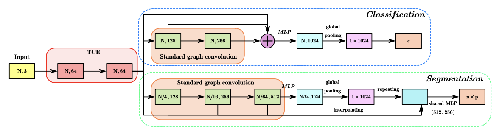
图 12 TransformerConv Pipeline
2.3 Efficient Transformers
对于标准的 Transformer 过程，若输入点云的数量为 \(N\)，其核心——自注意力模块的计算和存储复杂度均为 \(O(N^2)\)，这也成为在大规模点云数据集上应用 Transformer 的主要缺点。因此，通过改进自注意力模块以提高计算效率的 Transformer 研究也逐渐受到科研人员的关注。
Centroid Transformers将 \(N\) 个点特征作为输入，其输出只有 \(M\) 个特征 \((M \leq N)\)。其核心思想是 ** 输入点云中的关键信息可以通过较少数量的输出（亦称为质心）来概括 **。首先通过优化一个通用的 \(soft \; K-means\) 目标函数，从 \(N\) 个输入构建 \(M\) 个质心，由质心信息构建 Query 矩阵，输入信息构建 Key 矩阵，使计算的时间复杂度由 \(O(N^2)\) 缩减为 \(O(NM)\)。为了进一步降低时间复杂度，该方法还采用了 KNN 近似，本质上是将全局 Transformer 转换为局部 Transformer，此时相似性矩阵是通过衡量每个 query 特征向量与其 K 个邻近的 key 向量之间的关系而生成，将时间复杂度进一步降低到 \(O(NK)\)。
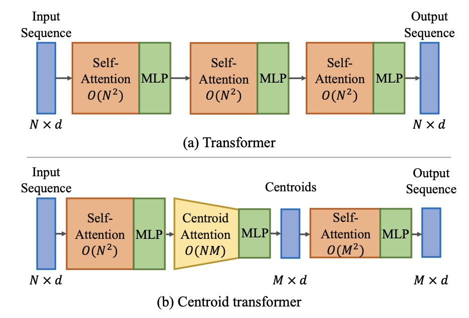
图 13 Centroid Transformers Pipeline
LighTN旨在简化标准 Transformer 的主要部件，在提高效率的同时保持其卓越性能。其首先删除了 Position Embedding 模块（** 由于输入的 3D 坐标已经包含位置信息，可以被视为位置编码的替代 **），其行为移除了位置编码的计算开销。其次，它利用小尺寸共享线性层作为 Input Embedding Layer，与 PCT 中的相比 Embedding 特征维度降低了一半，可以减少 Input Embedding 的计算成本。最后，该方法提出了一个单头自相关层作为自注意力模块，抛弃了投影矩阵 \(W_Q , W_K, W_V\)，减少了可学习参数以实现高效，其自相关模块可以表示为：
\( \begin{align} SA(X)=FC_{out}(C(X)) \end{align}\)
\( \begin{align} C(X)=\operatorname{Softmax}\left(\frac{X X^{T}}{\sqrt{C}}\right)X \end{align}\)
这里 \(SA(*)\) 表示自注意力块，\(FC_{out}\) 表示线性变换，\(\operatorname{Softmax}\) 表示激活函数，\(C\) 是输入特征维度。最后，该方法在 FFN 中构建了三个线性层，并在中间层采用了 expand reduce 策略，可以减轻因自注意力模块中可学习参数的减少造成的负面影响。
3. Data Representation
3D 数据有多种表示形式，主要分为 ** 点 ** 表示和 ** 体素 ** 表示。这两种形式均可用作 3D Transformer 的输入，并且之间还可以互相转换。因此根据输入格式的不同，可以将 3D Transformer 分为 Voxel-based Transformer 和 Point-based Transformer。
3.1 Voxel-based Transformer
由于 3D 点云通常是非结构化的，因此无法通过传统的卷积算子进行处理，除非将其转化为体素形式后，其结构与图像才可以相似。最通用的 3D 点云体素化方法流程为：通过光栅化将点云的边界框有规律的划分为 3D 长方体保留包含点云的体素，并生成点云的体素表示。
受到稀疏卷积在体素数据上运行的效率的启发，VoTr主干用于对 3D 点云实施体素变换，以满足 3D 对象检测任务。其方法提出了 Submanifold Voxel 模块和 Sparse Voxel 模块，** 分别从非空和空体素中提取点云特征 **。在这两个模块中，基于多头自注意力机制实现了局部注意力和扩张注意力操作，实现了大量体素下的低计算消耗。
VoxSeT致力于解决 Transformer 基于体素的室外 3D 检测的计算问题，其以 Set-to-Set 的形式检测户外物体。该方法建立在基于体素的集合注意力（VSA）模块上，通过两个交叉注意力减少每个体素中的自注意力，并对一组潜在代码引起的隐藏空间中的特征进行建模。VSA 模块可以使 VoxSeT 管理大范围内任意大小的体素化点簇，并以线性复杂度的方式进行处理。
收到大规模点云上基于体素表示的有效性的启发，基于体素的 Transformer 也可以应用于大规模点云的处理。SVT-Net提出了用于 ** 大规模地点识别的超轻量级稀疏体素 Transformer**。该框架采用了基于原子的稀疏体素 Transformer（ASVT）和基于集群的稀疏体素 Transformer（CSVT），其中前者用于编码短程局部关系，后者用于学习远程上下文关系。
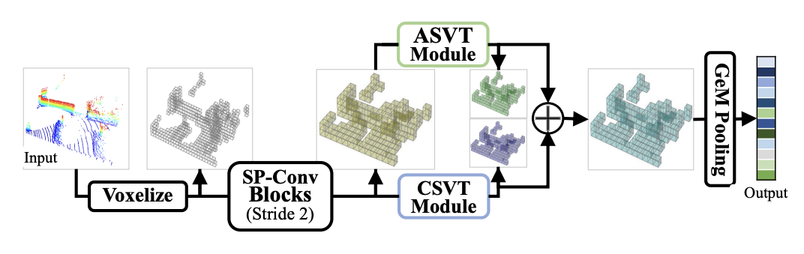
图 17 SVT-Net Pipeline
EPT提出的高效点 Transformer 用于从点云理解大规模 3D 场景。为了 ** 解决点云体素化过程中几何信息丢失 ** 的问题，其引入了中心感知体素化和去体素化操作。并在此基础上，采用高效自注意力（ESA）层来提取体素特征。
3.2 Point-based Transformer
具有规定格式的体素在点云表达上势必会造成一定的几何信息丢失，因此大多数基于 Transformer 的点云处理框架都属于基于点的 Transformer。其架构通常分为 ** 均匀尺度架构 ** 和 ** 多尺度架构 **。
3.2.1 Uniform Scale
均匀尺度架构通常在数据处理过程中保持点特征的尺度恒定，每个模块的输出特征数量和输入特征数量一致。PCT是最具代表性的工作之一。在 Input Embedding 后，PCT 的四个全局 Transformer 块直接对叠在一起细化点特征，这有利于全局特征的学习，并且缺乏分层特征聚合的操作也有利于点云分割等稠密预测任务的 Decoder 设计。然而该方案也会导致在提取局部特征方面较弱，并且会导致较高的计算占用量和内存消耗。
图 19 Point CLoud Transformer Pipeline
3.2.2 Multi Scale
多尺度 Transformer 是指在特征提取时采用渐进点采样策略的 Transformer，也称为分层 Transformer。PT首次将多尺度结构引入纯 Transformer 网络，其 Transformer 层被用于渐进的对子点集进行采样。采样不仅可以通过减少 Transformer 网络中的参数而加速计算，还可以与基于 KNN 的局部特征聚合操作相结合，有利于诸如精细语义感知的任务，例如点云分割和点云补全。此外，网络最后一层经过高度聚合的局部特征可以作为全局特征应用于点云分类。
图 20 Point Transformer Pipeline
此外，仍有一些 Transformer 网络架构通过将卷积算子和 Transformer 进行结合，达到同时提取局部和全局特征的效果，以实现更好的语义特征表示。
4. 3D Tasks
与图像处理相似，3D 点云相关任务也可以分为两大类：** 高级任务 ** 和 ** 低级任务 **。高级任务涉及语义分析，重点是 ** 将 3D 点云转换为人们可以理解的信息 **。低级任务侧重于 ** 探索基本几何信息 **，与人类语义理解没有直接关系，但是可以间接辅助高级任务。
4.1 High-level Task
高级任务通常包括：点云分类和分割、点云目标检测、点云目标跟踪以及点云配准等等。
4.1.1 Classification & Segmentation
3D 点云分类旨在将给定的 3D 形状分类为特定类别，并且用于分割网络的 Encoder 通常是由分类网络发展而来两者具有很高的相似性。
A-SCN首次将自注意力机制引入到点云识别任务中。在受到 shape context（形状上下文）的启发后，其首先将输入点云转换为形状上下文表示的形式，该表示由一组同心壳箱构成，随后引入了 ShapeContextNet(SCN) 来执行点特征的提取。并将点积自注意力模块应用于形状上下文表示中，以便自动捕获丰富的局部和全局信息。
Point Transformer中，Point Transformer 块是在 Point Transformer 层的基础上以残差方式构建的。其 Encoder 仅由 Point Transformer 块、逐点变换和点云分类的池化操作构建。此外 PT 还使用 U-Net 结构对点云进行分割，并采用与 Encoder 对称的 Decoder 设计。其提出的 Transition up 模块用于从下采样点集中恢复具有语义特征的原始点云，该模块由线性层、Batch Normalization、ReLU 和用于特征映射的三次线性插值模块构成。此外，在 Encoder 和相应的 Decoder 之间引入了 Skip Connection 以促进反向传播。
图 22 Point Transformer Pipeline
Point-BERT通过用于点云分类的 Mask Point Modeling 任务来预训练纯基于 Transformer 的模型。点云首先被分为几个局部 point batch，然后利用 mini PointNet 获取每个 patch 的 Embedding Feature，并将一些 Feature 随机丢弃，其余送到 Transformer 网络并恢复被 mask 的 token。
图 23 Point-BERT Pipeline
Point-Voxel Transformer(PVT)是一种以 3D 体素为输入的纯粹基于 Transformer 的点云学习 backbone，采用稀疏窗口注意力（SWA）操作在移动窗口配置的非重叠 3D 体素窗口内执行自注意力，还引入了相对注意力（RA）操作来计算点的细粒度特征。
Stratified Transformer提出了分层 Transformer 来显式编码全局上下文，其还通过体素化将 Swin Transformer 应用于点云处理。分层 Transformer 将密集的局部点和稀疏的远点均作为 key vector, 这种操作有利于立方窗口之间的消息传递以及全局信息捕获。
图 25 Stratified Transformer Pipeline
4.1.2 Object Detection
3D 点云检测的目标是 ** 输出以点云作为输入数据的 3D 边界框 **。DETR作为第一个基于 Transformer 的 2D 目标检测器，提出了将 Transformer 与 CNN 结合以便解决NMS（非极大值抑制）。
基于 VoteNet，MLCVNet（多级上下文投票网络）首次将自注意力机制进入到室内场景下的 3D 目标检测。该网络通过编码上下文信息来提高检测性能，网络中每个 point patch 和 vote cluster 都被视为 Transformer 中的 Token，并通过自注意力机制分别捕获 point patch 和 vote cluster 的关系来增强相应的特征表示。
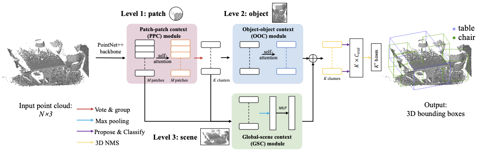
图 26 MLCVNet Pipeline
MLCVNet 作为一种手工分组的方案，即通过从相应局部区域内的点学习来获得候选对象的特征。然而 Group-Free 3D 则认为有限区域内的点分组操作会降低 3D 目标检测的性能，其借助 Transformer 中的注意力机制提出了一个无群体的框架，其核心思想是候选对象的特征应该来自 ** 给定场景中的所有点 **，而不是点云的某个子集。在获得候选目标后，首先利用自注意力模块捕获候选对象之间的上下文信息，接着设计了一个交叉注意力模块，利用所有点的信息进一步细化目标特征。
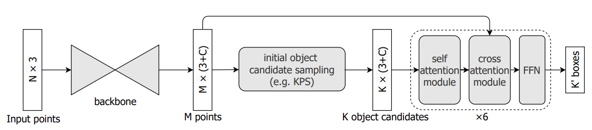
图 27 Group-Free 3D Pipeline
受到 DETR 的启发，3DETR提出了基于端到端的 3D 目标检测网络，首次将 3D 目标检测描述为 set-to-set 问题。其网络结构为 Encoder-Decoder 形式，在 Encoder 中，采样点与经过 MLP 提取的相应特征直接输入到 Transformer 块中进行特征细化；在 Decoder 中，这些特征通过并行的 Decoder 并转化为一组对象候选特征，该组特征用于预测 3D 边界框。
在室外场景的 3D 目标检测方向，CT3D提出了一种 Channel-wise Transformer 的两阶段框架。Channel-wise Transformer 的输入来自于RPN（区域提议网络），Transformer 由 Proposal-to-Point Encoder 模块和 Channel-wise Decoder 模块构成。Encoder 模块首先将 Proposal 及其对应的 3D 点云作为输入，然后通过自注意力块提取细化的点特征。Decoder 模块通过通道重新加权方案将 Encoder 模块提取的特征转换为全局表示。最后通过前馈网络进行检测预测任务。
TransFusion提出一种基于 Transformer 的 Lidar-Camera 融合的 3D 目标检测器。其采用注意力机制自适应的融合图像中的特征，用于解决 Lidar 点与标定矩阵建立的地图点关联不良的问题。此外，CAT-Det在点云和图像的分支流程中分别引入了 Pointformer 和 Imgaeformer 来提取多模态特征，并设计一个跨模态 Transformer 来结合上述两个流程得到的特征。
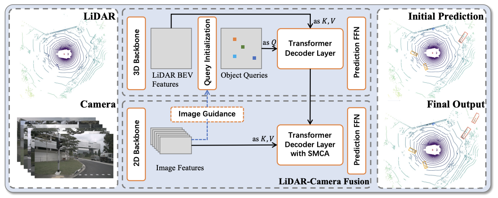
图 40 TransFusion Pipeline
4.1.3 Object Tracking
3D 目标追踪采用两个点云（模版点云和搜索点云）作为输入，输出搜索点云中模版目标的 3D 边界框。该技术涉及点云的特征提取以及模版和搜索点云之间的特征融合。
LTTR认为搜索点云中的不同区域应该对特征融合过程贡献不同的重要性，其提出的方法专注于特征融合，可以通过捕获跟踪时间上的注意力变化来改进模版和搜索点云之间的特征融合。其首先构造了一个 Encoder 分别改进模版和搜索点云的特征表示，接着通过交叉注意力机制构建 Decoder。该方法可以融合模版中的特征，并通过捕获两个点云之间的关系来搜索点云。自注意力用来编码点云内的关系，交叉注意力用来编码点云之间的关系。
PTT提出了一种实时追踪单一 3D 目标的方法，引入了点云跟踪 Transformer 来增强特征融合步骤后的特征表示。该方法还设计了捕捉位置特征的 KNN 算法和 MLP 层，作为其位置编码模块。将特征和点云坐标都进行 Embedding 操作，生成语义特征和位置特征后，通过自注意力块得到更具代表性的特征。
4.1.4 Registration
给定两个点云作为输入，点云配准的目的是找到一个变换矩阵将其对齐。
DCP是首次采用 Transformer 模型改善点云配准中特征提取的工作，它将 Encoder 模块引入到点云配准任务中。首先将未对齐的点云发送到 Embedding 模块（例如 PointNet 和DGCNN），将 3D 坐标变换到特征空间中；接着应用标准 Encoder 对两个 feature embedding 进行上下文聚合；最后利用可微分的SVD（奇异值分解）层计算刚性变换矩阵。
RGM首次提出利用基于深度图匹配的框架来进行稳健的点云配准。在深度图构建的过程中，采用 Encoder 来获取深度图中两个节点的软边，该软边可以在点云配准时为重叠部分获得更好的对应关系。
REGTR采用注意力机制替代传统点云配准中使用 RANSAC 模块实现的特征匹配和异常值过滤，其设计了一个用于直接查找点云对应关系的端到端 Transformer 框架。在采用 KPConv 作为 backbone 生成点的特征之后，将该特征输入到多个多头自注意力层和交叉注意力层中，实现源点云和目标点云之间的比较。
4.1.5 Pointcloud Video Understanding
以固定帧速率捕获的一组点称为点云视频，他可能是现实世界中动态场景下有前途的数据表示之一。由于点云视频理解涉及处理 3D 点云的时间序列，因此可以通过 Transformer 架构对其进行操作。
P4Transformer对点云视频进行处理以进行动作识别。输入数据首先通过一组时空局部区域表示来得到局部时空特征；然后使用点 4D 卷积对每个局部区域的特征进行编码；接着引入 Encoder 通过捕捉整个点云视频中的远程关系来接收和集成局部区域的特征，从而实现诸如动作识别等任务。
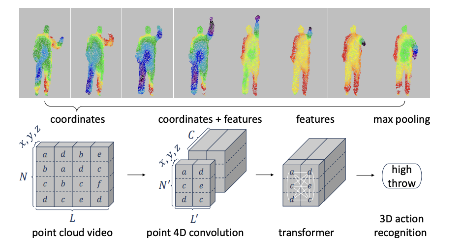
图 49 P4Transformer Pipeline
4.2 Low-Level Task
低级任务的输入数据通常是存在遮挡、噪声、密度不均等情况的原始扫描点云，其目标是经过处理后获得高质量的点云。典型的低级任务包括点云下采样、上采样、去噪和补充等。
4.2.1 Downsampling
对于一个包含 \(N\) 个点的原始点云，下采样的目标是输出尺寸较小的包含 \(M\) 个点的点云，同时利用 Transformer 保留输入点云的几何信息。LightTN以面向任务的方式对点云进行下采样。其首先删除了 Poisition Embedding，并使用小尺寸共享线性层作为嵌入层；此外采取单头自相关层替代多头注意力层。使得仅需采样 32 个点便可获得 86.18% 的分类准确率。
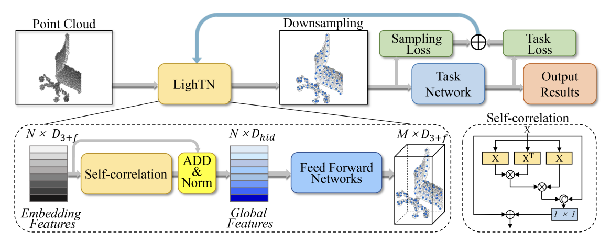
图 50 LightTN Pipeline
4.2.2 Upsampling
与下采样相反，点云上采样的目的是通过输出比输入尺寸更大的点云来恢复丢失的细尺度几何信息，其输出点云会反映真实的几何形状。PU-Transformer首次采用基于 Transformer 模型进行点云的上采样工作，有两个新颖的模块。第一个是位置融合快（PosFus），旨在捕获局部位置相关信息；第二个是偏移通道多头自注意力块（SC-MSA），旨在解决传统 MSA 中不同头的输出缺乏连接的问题。
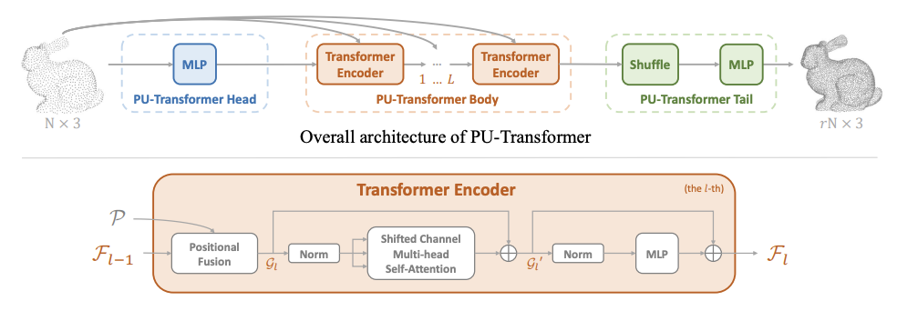
图 51 PU-Transformer Pipeline
4.2.3 Denoising
去躁以被噪声污染的点云作为输入，利用局部几何信息输出干净的点云。TDNet首次将 Transformer 应用于点云去躁工作。其将每个点作为一个 word token，并改进了 Transformer 结构，使其适合点云特征提取。Encoder 将输入点云映射到高维特征空间并学习点云之间的语义关系；接着通过提取出来的特征获得含有噪声的输入点云的潜在流形；最后通过对每个面片流形进行采样即可得到干净的点云。
针对某些激光雷达点云由于玻璃或其他反射材料而产生的大量虚拟噪声点，还可以通过直接从输入点云中将噪声点过滤掉。RNF-PCT首先将输入的 3D Lidar 点云投影到 2D 的 range image 汇总，接着采用基于 Transformer 的 auto encoder 网络来预测 noise mask，以指示来自反射的点云。
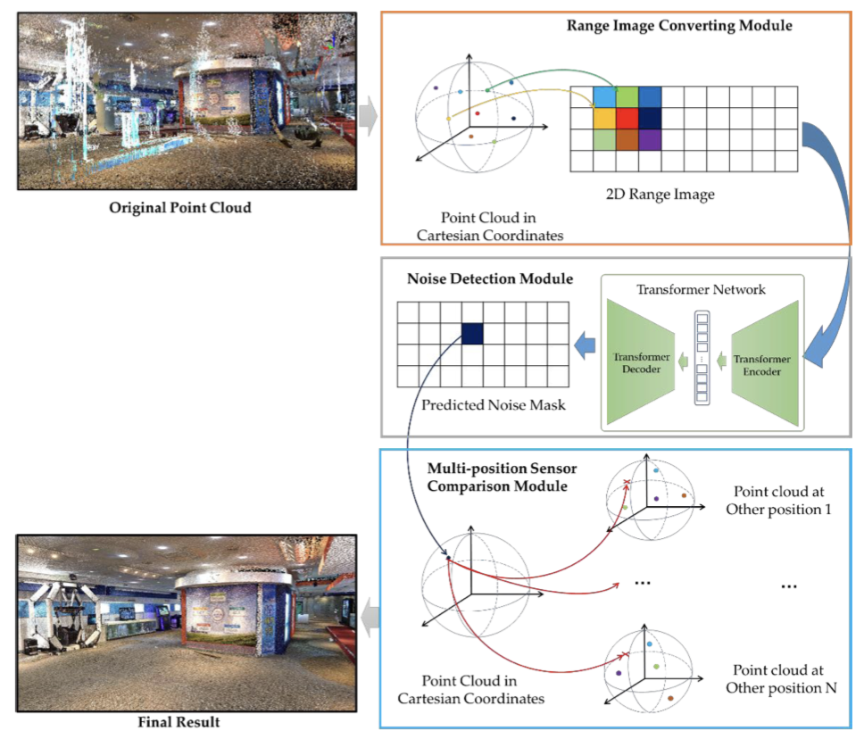
图 53 RNF-PCT Pipeline
4.2.4 Completion
在大多数 3D 实际应用中，由于其他物体的遮挡或者自遮挡，通常很难获取到目标或场景的完整点云。因此点云补全是 3D 视觉领域重要的低级任务。
PointTr首次将点云补全任务转换为 set-to-set 的转换任务。其认为输入点云可以由一组局部点群表示，称为“点代理”。该方法以一系列点代理作为输入，通过一个几何感知 Transormer 来生成缺失部件的点代理；接着通过 FoldingNet 以从粗到细的方式根据预测的点代理生成点。在流程中，几何感知 Transformer 作为一个独立的模块可以捕获点之间的语义和几何关系。
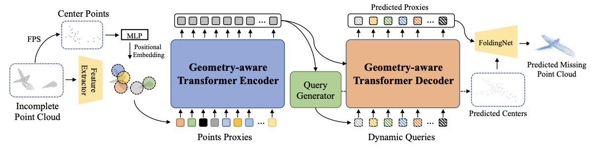
图 54 PointTr Pipeline
与 PointTr 不同，SnowflakeNet采用让点云以雪花状增长的方式实现点云补全。其核心思想是将雪花点反卷积层（SPD）与 skip-Transformer 相结合，更好地指导点的分裂过程。SPD 可以从任何一个点生成多个点；skip-Transformer 能够从给定点和生成点捕获上下文和空间信息。通过对 skip-Transformer 的集成，SPD 层可以对结构特征进行建模，从而产生更紧凑和结构化的点云。
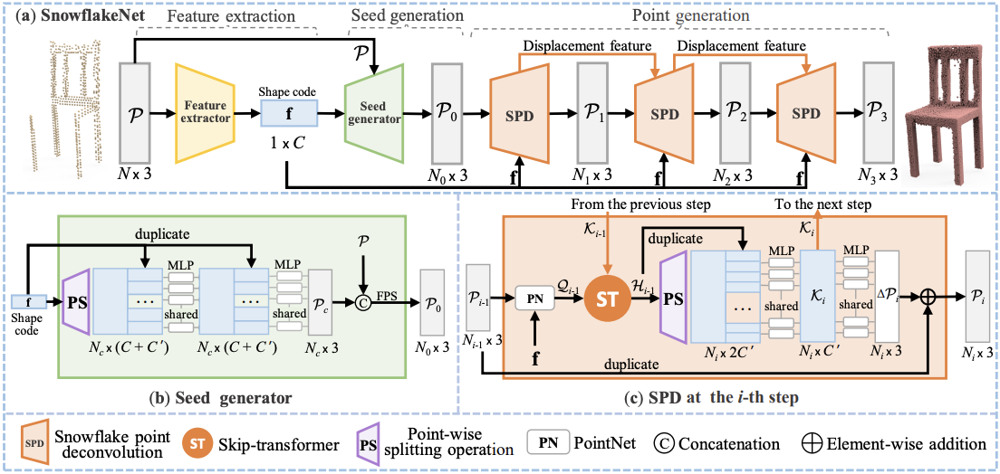
图 55 SnowflakeNet Pipeline
ShapeFormer并不是直接在点云上操作，而是引入了一种新颖的 3D 稀疏表示，称为矢量量化深度隐式函数（VQDIF），它将 3D 点云转换为一组由坐标和量化特征索引组成的离散二元组。在此基础上，设计了 VQDIF Encoder 和 Decoder 进行 3D 点云和二元组的转换，VQDIF Encoder 将输入的部分点云转换为二元组特征序列，接着部分二元组特征序列被送入到基于 Transformer 的自回归模型中，生成完整的特征序列，这些序列通过 VQDIF Decoder 投影到特征网格，最后通过 3D-UNet 生成对象整体形状的局部深层隐式函数。
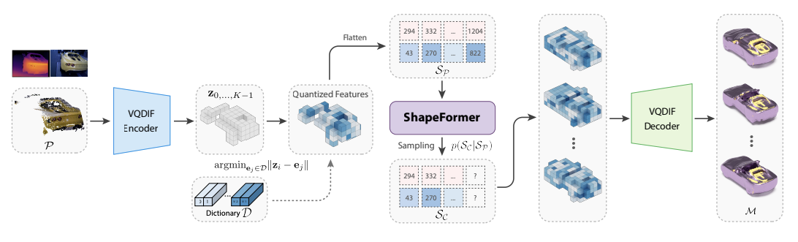
图 56 ShapeFormer Pipeline
5. 3D Self-Attention Variants
基于标准的自注意力模块，许多变体旨在提高 Transformer 在 3D 点云处理中的性能。主要分为两大类：Point-wise Variants 和 Channel-wise Variants。
5.1 Point-wise Variants
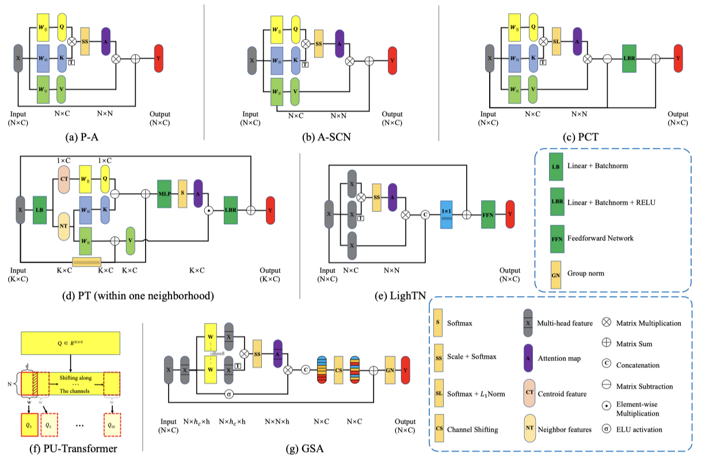
图 57 Architectures of Point-wise Variants
P-A（图 57-a）和A-SCN（图 57-b）在 Encoder 结构中有着不同的残差结构。前者加强了模块输出和输入之间的关系，后者建立了模块输出和 Value 矩阵之间的关系。
受到 图卷积网络 中拉普拉斯矩阵 \( L = D - E\) 的启发，PCT提出了 Offset-Attention 模块（图 57-c），该模块通过矩阵减法计算自注意力（SA）特征和输入特征 \(X\) 之间的偏差，并用 \(Softmax+L_{1} \; norm\)（SL）运算代替 \(Scale + Softmax\)（SS）来改进相似性矩阵的归一化。该模块可以提高注意力权重并减少噪声的影响。基于 Offset-Attention，PTTR提出了一种关系注意力模块（RAM），首先通过线性层将 Query，Key 和 Value 矩阵投影到潜在特征空间中；接着在生成相似性矩阵前，对 Query 和 Key 矩阵应用 \(L_2\) 归一化，该操作可以防止少数具有极大幅度的特征通道削弱其他特征通道的作用。